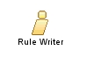

| Rol: Rule Writer |
 |
|
 |
| In a business environment, business
policies are ultimately implemented as part of critical business applications as executable rules. Rule
Writers are experts in business logic and manage executable business rules within an organization. Rule Writers
are responsible for writing and/or enforcing the business policies of a given enterprise.
In a BRMS rule writers participate in the initial process of extracting business rules from existing policy (documents, databases, code, SME, etc.). This process, referred to as rule harvesting, is carried out with the business analyst whose aim is to determine the vocabulary elements that are necessary to be able to write the rules that implement the policy. During the rule set development life cycle the Rule Writer will use different authoring environments: he uses an Integrated Development Environment like Eclipse IDE to develop the structure of the rules set, the executable flow of rules, the technical rules, and he can test the execution of the rules in this environment. Once the rule set is mature enough Rule Writer will use a web based BRMS platform. The advantage of the web based for rule authoring is the ubiquitous access, and the use of wizards to guide the management of the rules and the rule sets. |
| Habilidades | Rule Based programming Object Oriented Analysis Business knowledge |
|---|---|
| Sinónimos | Policy Manager |
This program and the accompanying materials are made available under the |